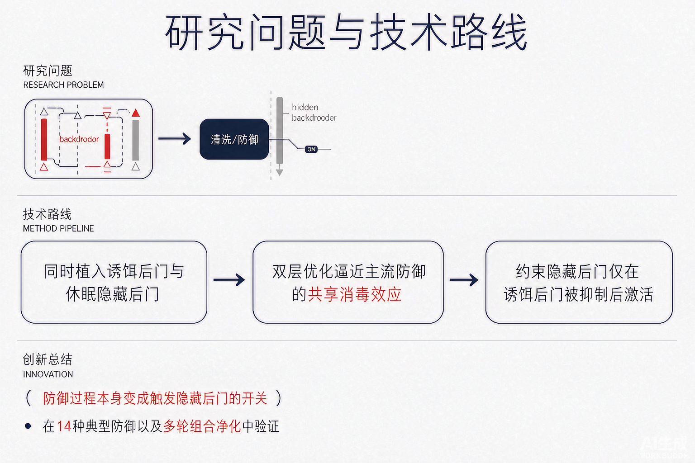

Problem
解决的问题
后门消毒被广泛视为安全部署第三方模型的关键防线，但防御过程本身能否被攻击者利用、演变为新的攻击面，此前尚未被刻画。
Attacking on DNNs · 2026 · NeurIPS
When Sanitization Becomes the Trigger: Defense-Triggered Backdoor Attacks
Problem
后门消毒被广泛视为安全部署第三方模型的关键防线，但防御过程本身能否被攻击者利用、演变为新的攻击面，此前尚未被刻画。
Value
在多数据集、不同网络与 14 种代表性防御上，DTB 都能稳定触发隐藏后门，且在多轮组合消毒后依然显著，提示消毒后的安全性不能仅以“原后门是否消除”来判断。
Paper-grounded Academic Summary
主要创新性：首次揭示“防御过程可沦为条件触发器”这一威胁：同时植入正常激活的诱饵后门与休眠的隐藏后门，使消毒在抑制诱饵后门的同时激活隐藏后门；用双层优化逼近主流防御的共享消毒效应，并约束隐藏后门只在诱饵后门被充分抑制后激活。
学术影响力：揭示了现有后门防御流水线的潜在威胁，提示防御设计需同时考虑消毒过程本身的安全性，为条件后门攻击研究开辟新方向。

Technical Route
Innovation